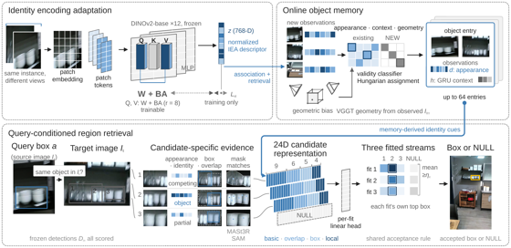
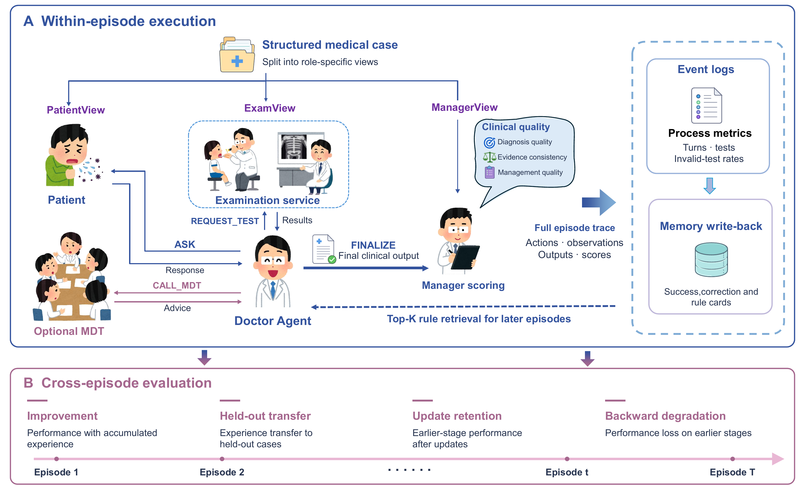
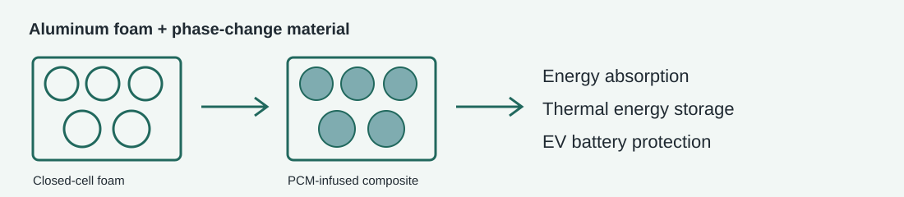

May – Oct 2025

JD.com
LLM Algorithm Intern, JD Explore Academy
Worked on human-like LLM behavior and multi-agent dialogue, including training-data construction, reward-model training, distributed post-training (SFT/DPO), and performance evaluation.
I study how language-model agents learn from experience, use external knowledge, and make reliable decisions over extended interactions.
My recent work connects clinical-agent evaluation, regression-safe knowledge routing, audits of LLM judges, and exact feedback reduction for model comparison. Drawing on statistics, I aim to develop agents that improve over time and evaluation methods that make their progress measurable, trustworthy, and efficient.
LLM Algorithm Intern, JD Explore Academy
Worked on human-like LLM behavior and multi-agent dialogue, including training-data construction, reward-model training, distributed post-training (SFT/DPO), and performance evaluation.
Research Intern, Institute for AI Industry Research (AIR)
Conducted research on medical LLMs and doctor agents, including evaluation-framework design, algorithm implementation, and experimental analysis.
Master of Applied Statistics
Machine Learning Track
Bachelor of Statistics
Sep 2020 – Jun 2024Preprint
Retrieves the same physical object across sparse RGB views using identity-adapted memory and local feature correspondences.

NeurIPS 2026 · E&D Track · Poster
An executable evaluation protocol for studying evidence acquisition, resource use, and experience-driven changes in doctor agents.

AAAI submission · Under review
Med-TrustRouter selects how to use external evidence and reasoning chains while preserving the base answer unless another action is confidently better.

AAAI submission · Under review
A benchmark for auditing LLM judges of multi-episode drama, separating verifiable defects, strong panel preferences, and human disagreement.

Preprint
Contrast-Aware Feedback Acquisition skips scores that cancel from the requested comparisons, recovering fully scored sample means and covariances exactly.

Composite Structures · 2025
A composite combining aluminum foam and phase-change material to improve energy absorption and support thermal energy storage in EV battery systems.

Interactive demo · Medical robotics
Explore a conceptual ultrasound-assisted robot in 3D. Rotate and zoom the model, inspect its components, and follow probe motion and target recovery.
超声机器人三维交互演示：旋转缩放整机模型、查看部件职责，并观察探头运动与目标恢复过程。
Open interactive demo →Earlier notes are written in Chinese.